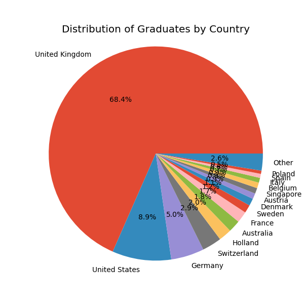
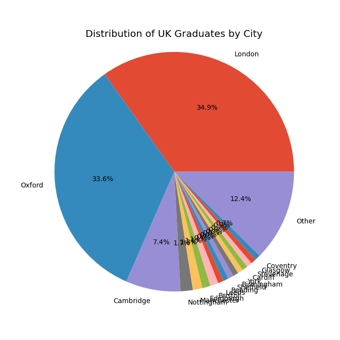

This dashboard contains information about the data collected and analysed as part of the alumni project. I have grouped plots and summaries by theme which you can access using the dropdowns (hopefully)!
Because part of the project is to collect and clean data, I'll start by demonstrating the progress made in the data collection.
The data is stored in an Excel spreadsheet. There are three areas of data collection:
The following plots show the progress made in data collection. The first plot shows the number of students for which we have collected alumni information, jobs and publications. The second plot shows the number of publications collected.
The following plots shows the distribution of where students were before they came to the DTC. We can look at country and intitution of both the undergraduate and postgraduate study, as well as whether students remained where they started.
The following plots shows the distribution of what students studied before they came to the DTC. We can look at the subject of both the undergraduate and postgraduate study. Subjects were grouped by 'Category' which is a broad grouping of subjects. For example, 'Mathematics', 'Applied Mathematics' and 'Statistics' etc. are grouped under 'Mathematics'.
The following plots shows the distribution of where students are now. We can look at country and intitution of both the undergraduate and postgraduate study.
Firstly, on the top level, we can look at what continents graduates have found themselves in.
The overwhelming majority are (perhaps predictably) in Europe, with North America far behind in second place. Let's break that down by country.
Unsurprisingly, the UK is the most popular destination. The pie chart also shows that the overwhelming majority of students in North America are in the US.
We can take a quick look at where graduates have gone outside of the UK in Europe.
Germany is the most popular destination, with Switzerland and Holland following behind.
Finally, we can look at where graduates have gone in the UK.
Most graduates have remained in the same country as that which they studied in prior to the DTC.
The following plot shows the distribution of graduates' current sector.
Most graduates are in the 'Academic' sector, with 'Research' and 'Pharma' following behind.